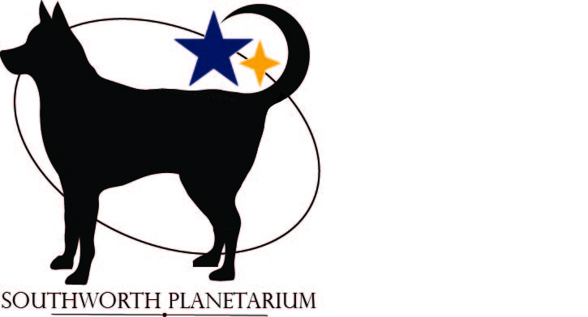
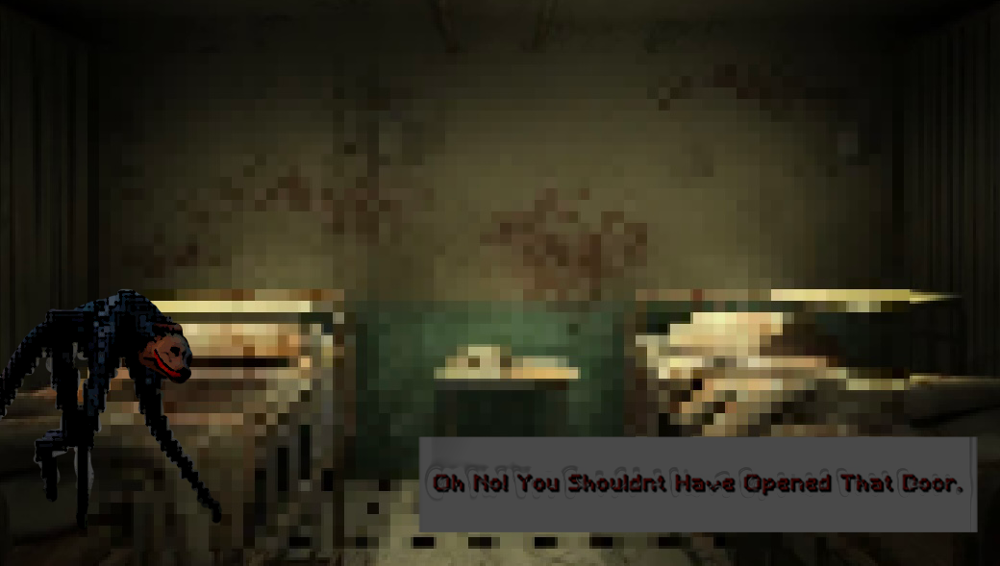

Digital Portfolio by Rin Richards
For my Southworth Planetarium Design, I wanted to incorporate USM’s strong branding, and retro detailing to nod to the planetarium’s history. USM’s major branding points include their colors, and the husky mascots, which take center stage in the design. I also found it important to have a dog as the focal point in the design because of the history of dogs in space exploration. After 3 different iterations, I finally landed on this final version!
Download Project 1
With my childhood dog, Guinness, celebrating his 12th (and golden) birthday, I wanted him to take part in my cryptid project. He’s always been full of personality, and always a little strange, so I had more than plenty of photos of him that were perfect for the job. Building off of my Laika inspiration from projection 1, I created a story about super dogs in hospitals, and used an 8-bit horror game theme. If Guinness understood computers, he’d love to be immortalized as a cryptid.
Download Project 2
I wanted to balance the warmth and wistfulness of nostalgia in my Premiere Pro project. The video clips were meant to be hazy, lower quality, or wildly vivid with color to replicate what it feels like to remember being a kid. It was a cathartic piece, one that was helpful in processing the transition into adulthood. I couldn’t be happier with how the video turned out.
Download Project 3
As for the interactive projection, I wanted to pick a sequence of videos that would be stunning at my beginning stage of skills, but could be elevated with the more I learned. I love interactive projections, and every time I go to an art museum, the immersive projection rooms end up being my favorite. I also hoped to choose a sequence that would be mesmerizing and relaxing. This project made me realize how much coding can amp up a simple piece!
Download Project 4